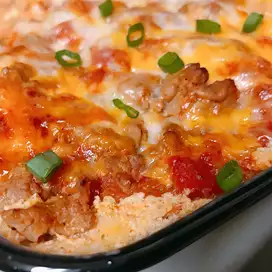

Lasagna

Lasagna are a type of pasta, possibly one of the oldest types, made of very wide, flat sheets.
Things you need before cooking
Prep:
- 1 (14.5 ounce) can diced tomatoes with lime juice and cilantro
- 1 (16 ounce) package small-curd cottage cheese
- 1 egg
- 1 tablespoon ground cumin
- 5 (6 inch) corn tortillas, halved
- and some other suff =)
This is how you do it bb
- Heat oil in a large pot over medium heat. Add onion and garlic; cook and stir until onion is translucent, about 5 minutes. Stir in ground turkey; cook until no longer pink, about 5 minutes. Drain excess grease.
- Stir enchilada sauce and diced tomatoes into the pot. Simmer until flavors combine, about 20 minutes. Remove from heat.
- Preheat the oven to 375 degrees F (190 degrees C).
- Call delivery
- Enjoy